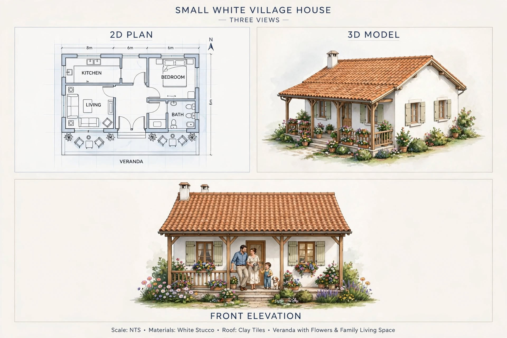

Small House Plans · Design Review
Small White Village Cottage with a Veranda
This presentation shows a simple white cottage with a clay-tile pitched roof, timber veranda, flower beds and a compact interior containing a kitchen, living area, one bedroom and a bathroom. The veranda is a strong feature: it creates a shaded transition between the garden and the interior.

Important dimension correction
Layout review
- Keep the living room connected to the veranda so the outdoor space can be used for sitting and family activities.
- Place the kitchen near the dining area, with a direct route for groceries and waste removal.
- Provide a private route from the bedroom to the bathroom without forcing visitors through the sleeping area.
- Check the bathroom door swing, ventilation window and floor fall to the drain.
Suggested measurement process
To produce a genuinely corrected dimensioned plan, a drafter should first establish one outside wall length, the perpendicular outside depth, wall thicknesses and a scale. Then each internal room should be dimensioned between finished wall faces. Door openings, window widths, veranda depth and roof overhangs must be measured separately. Do not infer these values from the illustration.
Roof and tropical comfort
The clay-tile pitched roof suits the cottage appearance and can provide a ventilated roof space if designed with suitable underlay, ridge detailing and eaves. Gutters and downpipes should discharge safely away from the foundations. Timber veranda posts and rails need weather-resistant detailing and maintenance access.
Construction and budget
Before estimating, obtain a site survey, soil assessment where required, structural design, drainage plan and a measured bill of quantities. Compare local quotations for masonry, roof timber or steel, tiles, waterproofing, joinery and finishes. The image is a visual concept, not a priced or approved construction package.
Professional-use note: These are concept-plan reviews, not construction drawings. A qualified local architect or engineer must verify the site dimensions, structure, drainage, setbacks, ventilation, fire safety and building approvals before construction.
← Back to Small House Plans